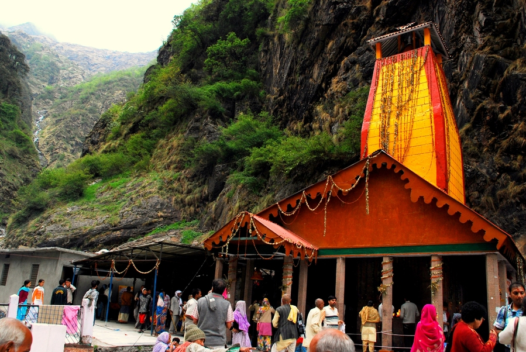

Featured Photos



Yamunotri, located in the Uttarkashi district of Uttarakhand, is one of the Char Dham pilgrimage sites and holds great significance in Hindu mythology. It is the source of the Yamuna River, which is considered sacred by Hindus. Situated at an altitude of approximately 3,293 meters (10,804 feet) above sea level, Yamunotri is surrounded by snow-capped peaks and lush greenery. The main attraction of Yamunotri is the Yamunotri Temple, dedicated to Goddess Yamuna. The temple is accessible via a trek from the town of Hanuman Chatti. Pilgrims visit Yamunotri to seek the blessings of the Goddess and take a dip in the holy waters of the Yamuna River. Apart from its religious significance, Yamunotri offers stunning landscapes, serene surroundings, and opportunities for trekking and spiritual reflection.